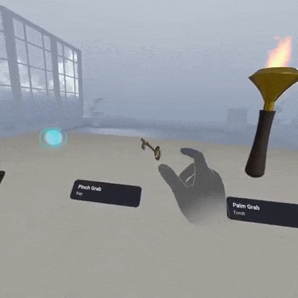
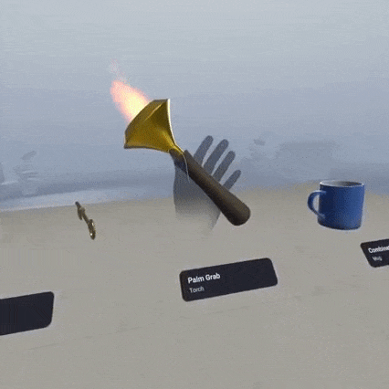
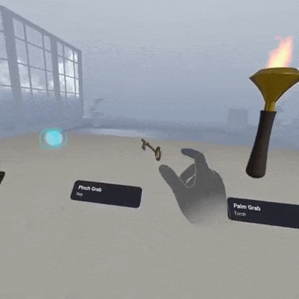
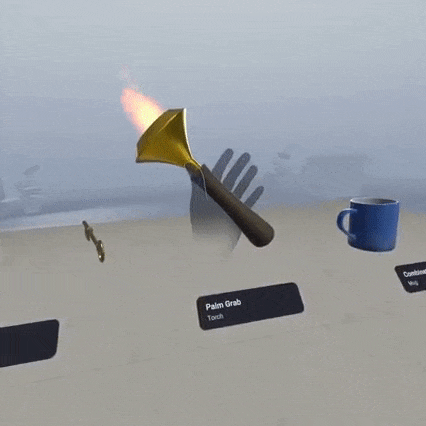

Today, Extened Reality (XR) systems often rely on device-based interactions, such as controllers or gloves, often face significant usability challenges. These devices can feel unnatural, requiring users to learn complex control schemes that disrupt immersion. Moreover, the reliance on hardware introduces logistical issues like cost, weight, and battery life, creating barriers for widespread adoption. For users, these devices may also lead to fatigue during prolonged sessions and restrict accessibility in scenarios where quick setup or minimal equipment is desirable. Such limitations hinder the vision of seamless, intuitive XR experiences and restrict XR's applicability across diverse fields such as education, healthcare, and entertainment.

 



Rather than sticking with traditional device-based interactions, we argue that a more intuitive and immersive approach lies in bare-hand interaction, where users engage with the XR environment using their natural hand gestures, without the need for additional physical tools. This shift from device-dependent to device-free interaction is becoming increasingly feasible thanks to advancements in hand tracking technology and computer vision, which allow for the detection of hand movements with high precision. Our research is focused on creating seamless bare-hand interaction systems for XR. These systems go beyond simply recognizing hand gestures. They aim to replicate the natural, fluid movements of human hands within virtual environments, offering a richer, more intuitive way to interact with digital spaces. This can involve a combination of visual, auditory, and haptic feedback, all working together to create a cohesive and engaging experience. The goal is to eliminate the need for controllers and allow users to directly manipulate objects, navigate environments, and communicate in ways that feel more natural and instinctive.